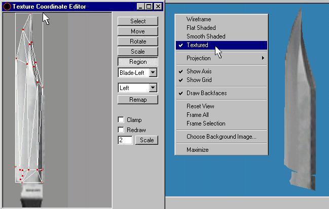
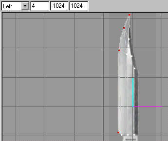
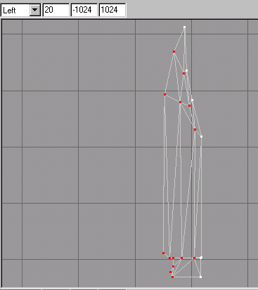

|
|
Again you will have to switch back to the "Groups" rollout to see if this did indeed assign the material, due to many unexplainable reasons, sometimes the first click doesn't do it. Don't ask me the reasons for this, it just happens that way sometimes.
At this time we will have to do some bit twiddling of the texture coordinates so that the material that we have chosen to assign to this side of the blade is going to align to the faces of our left side of the knife blade.
To do this click on "Window->Texture Coordinate Editor" on the menu selections. Here you will have to chose the group that is presently selected. Next you will click the "Region" button on the dialog box and click and drag a box around only the blade portion as shown in Figure 1.24. Also you will now turn on your "Textured" option in the "3D" viewport by right clicking in it and clicking on the menu option "Textured" also shown in Figure 1.24.

Figure 1.24 Adjusting the Material to the Group and setting 3D viewport to Textured
Now it is starting to look like a knife! We will now make a duplicate of this and mirror this duplicate. To do this you must still have all the faces of the "Blade-Left" group selected. If you do not you can switch to the "Groups" rollout and highlight the "Blade-Left" group and click the "Select" button. You will need to switch to the "Model" rollout. Here we will chose the "Edit->Duplicate Selection" on the menu selections to make a copy of the group. After this is done we will chose the "Vertex->Mirror Left<->Right" on the menu selections. it should perfectly align with the "Blade-Left" group. You should rename this new group by switching to the "Groups" rollout and renaming it to "Blade-Right" to avoid future confusion.
Now this duplicate does not have a material assigned to it. First to see a bit of texture magic, spin the view of the knife blades around in the "3D" viewport, by click and holding you mouse button down and dragging it to the left or to the right in the view port window. Spin it until you can see the backside that has no material. Now click on the Material" rollout and click the assign button. Now you duplicate will assume the texture material and place it perfectly as you have on the "Blade-Left" group. Now takes some bows for your magic act!
The next thing we need to do is weld the halves together, that's right! Get out your blow torch and lets weld this puppy! You do this by selecting the vertices that appear in this case to be already joined on the knifes cutting edge. Look at figure 1.25 to see all off the ones that are selected that need to be welded. We will have to do this one by one to insure that they will be done right.

Figure 1.25 The 4 vertices to be welded
Now switch to the "Model" rollout if you haven't already done so and select one of the four to be welded with the "Select" tool set to the "Vertex" mode. Next, click on the "Vertex->Snap Together" menu selection. Now comes the welding part we were discussing. Fire up that Acetylene Torch and, lets do this! Click on the Vertex->Weld Together" menu selection. If you watch in the "3D" viewport, you may see it go into action, depending on how your looking at it. You might see the faces look like they are fitting together better and change their looks a bit.
At this point we will have to fill the gaps on the back side of the blade. We will first be selecting all the vertices that might get in the way of our creating faces as mentioned earlier about the dented box syndrome. Deselect any vertices that may still be selected from the previous operation, by clicking in a blank area in the "Left" viewport. Next, you will be selecting all of the vertices except the ones on the left outer most edges in the "Left" viewport as Figure 1.26 shows.

Figure 1.26 Selected vertices to be hidden
|
|